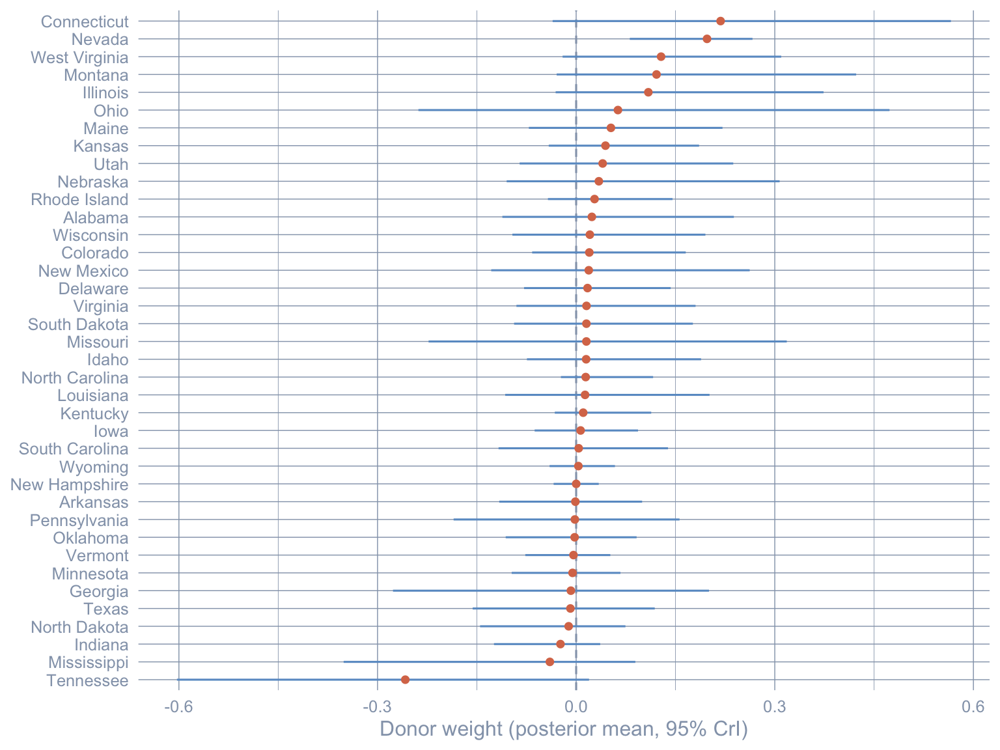
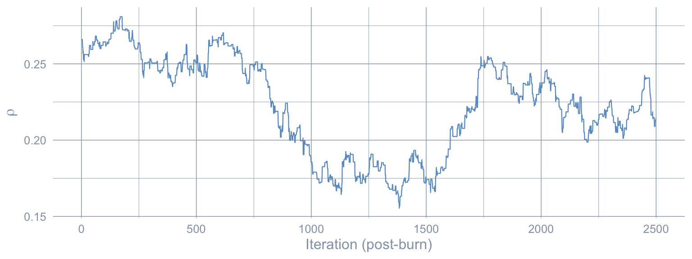
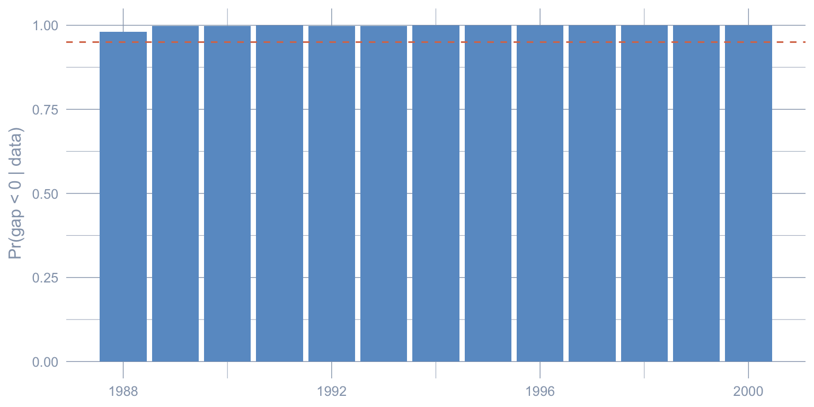
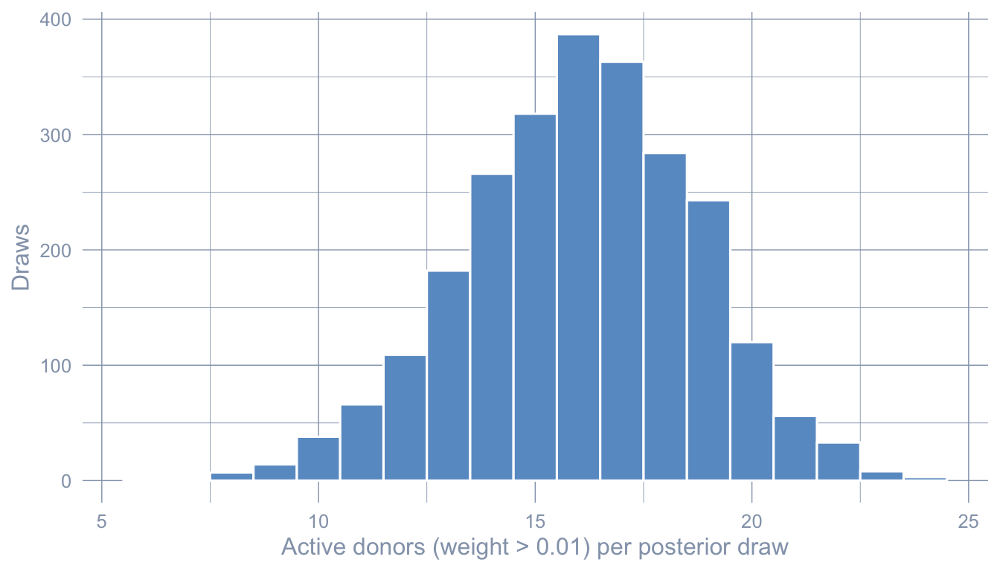

flowchart LR
A["Stage 1<br/>Classical SCM<br/>simplex weights<br/>SUTVA imposed"] --> B["Stage 2<br/>Bayesian SCM<br/>horseshoe prior<br/>SUTVA imposed"]
B --> C["Stage 3<br/>Bayesian Spatial SCM<br/>horseshoe + SAR ρ<br/>SUTVA relaxed"]
C --> D["Prior predictive<br/>+ cross-stage<br/>comparison"]
style A fill:#6a9bcc,stroke:#cbd5e0,color:#fff
style B fill:#d97757,stroke:#cbd5e0,color:#fff
style C fill:#00d4c8,stroke:#cbd5e0,color:#141413
style D fill:#7A209F,stroke:#cbd5e0,color:#fff
9 Bayesian Spatial Synthetic Control
9.1 Learning objectives
- Fit a Bayesian SCM with horseshoe priors using the bundled
R/scspill/Gibbs sampler. Horseshoe relaxes the simplex constraint, and the chapter shows the simplex’s four-donor sparsity is partly a constraint artifact — 23 donors load under the horseshoe. - Propagate donor-weight posterior uncertainty into credible intervals on the post-period gap series. Honest uncertainty on the ATT requires propagating uncertainty about the donor weights themselves, not just the noise around the synthetic counterfactual.
- Add a spatial-autoregressive (SAR) layer so donor outcomes can respond to the treatment, and estimate per-donor spillovers via the Sakaguchi-Tagawa identification formula. This is the only method in the book that relaxes SUTVA and recovers a closed-form spillover for each neighbour — essential when the treated unit shares a border with several controls.
- Run prior predictive checks on summary statistics (mean, spatial structure, autocorrelation, factor dominance) to confirm the SAR prior is compatible with the observed data. Prior predictive checks are the safeguard against a posterior driven by a misspecified prior rather than the data.
9.2 Why a fourth synthetic-control chapter?
Chapter 4 fit a classical Synthetic Control: donor weights live on the simplex and are chosen by a quadratic optimiser. Chapter 5 augmented those weights with a ridge outcome-model bias correction. Chapter 6 then ran DiD on a panel doubly de-meaned by simplex unit and time weights. Chapter 7 borrowed donor information through a Bayesian structural time-series model. Chapter 8 put a finite-sample frequentist prediction interval around the classical fit and relaxed the simplex to lasso / ridge / OLS — but, like every chapter before it, retained SUTVA. All of them treat the donor states’ outcomes as unaffected by California’s policy. That assumption — the stable unit treatment value assumption (SUTVA) — is the price of any synthetic-control estimate.
For tobacco, SUTVA is empirically suspect. When California raised retail prices in 1989, cross-border-shopping into Nevada changed cigarette sales on both sides of the line. If donor sales themselves shift because of the treatment, then the “counterfactual” we build from them is contaminated.
This chapter ports the replication of Sakaguchi & Tagawa (2026), which relaxes both ingredients in two stages:
- Stage 2 swaps the simplex for a horseshoe prior on the donor weights. Sparsity becomes a feature of the posterior, not a hard constraint.
- Stage 3 adds a spatial autoregressive (SAR) layer to the donor data-generating process. SUTVA is no longer assumed — spillover effects on neighbours become a derived quantity, with Nevada absorbing essentially all the mass.
We rerun Stage 1 in this chapter too, so the three estimates sit in one table. The donor pool here is the 38 US states; the treated unit is California; the outcome is per-capita cigarette sales over 1970–2000.
9.3 The three-stage pipeline
9.4 Setup and data
Code: Load packages, set MCMC constants, seed, and ggplot theme.
library(tidyverse)
library(tidysynth)
library(Rcpp)
library(RcppArmadillo)
library(Matrix)
library(coda)
library(patchwork)
library(glue)
source("R/table_helpers.R")
SEED <- 20251022L
MCMC_ITER <- 5000L # tutorial scale; raise to 100000L for paper-grade rho ESS
MCMC_BURN <- 2500L # half of MCMC_ITER; bump to 50000L when MCMC_ITER hits 100000L
TREAT_YEAR <- 1988L
set.seed(SEED)
# CAVEAT (see the dedicated callout under Stage 3): at MCMC_ITER = 5000L the
# effective sample size for rho is in single digits. The Stage 3 ATT *point
# estimate* is reliable, but the Stage 3 *credible interval* is artificially
# narrow until iterations are raised to 100,000.
knitr::opts_chunk$set(dev.args = list(bg = "transparent"))
theme_set(
theme_minimal(base_size = 12) +
theme(
plot.background = element_rect(fill = "transparent", color = NA),
panel.background = element_rect(fill = "transparent", color = NA),
panel.grid.major = element_line(color = "#94a3b8", linewidth = 0.25),
panel.grid.minor = element_line(color = "#94a3b8", linewidth = 0.15),
text = element_text(color = "#94a3b8"),
axis.text = element_text(color = "#94a3b8")
)
)The helpers from the scspill replication package are vendored under R/scspill/; the two C++ MCMC kernels live alongside them and are compiled at chunk runtime by Rcpp::sourceCpp(). On a fresh checkout the first render compiles the kernels (~30 s) and runs the Gibbs sampler (~1–3 min); subsequent renders hit Quarto’s _freeze/ cache.
R’s default Makeconf on macOS expects the CRAN gfortran toolchain at /opt/gfortran/. If that directory is missing, the linker fails on -lemutls_w. The chunk below is a best-effort fallback: it detects the situation and writes a temporary Makevars that points FLIBS at any available Homebrew gcc install (Intel layout at /usr/local/Cellar/, Apple Silicon layout at /opt/homebrew/Cellar/, or the symlinked /opt/homebrew/lib/gcc/current) before Rcpp::sourceCpp() runs. If neither /opt/gfortran/ nor a Homebrew gcc install is present, the chunk silently skips the override and Rcpp::sourceCpp() will fail at link time with -lemutls_w. The fix in that case is to install gfortran from https://mac.r-project.org/tools/ (the CRAN-blessed toolchain) or via Homebrew (brew install gcc). R/scspill/.Makevars-rcpp.example shows the static form of the same override for readers who want to persist it.
Code: Patch FLIBS on macOS, source scspill helpers, and compile Rcpp kernels.
if (Sys.info()[["sysname"]] == "Darwin" && !dir.exists("/opt/gfortran")) {
brew_libs <- c(
Sys.glob("/usr/local/Cellar/gcc/*/lib/gcc/*"), # Intel Homebrew
Sys.glob("/opt/homebrew/Cellar/gcc/*/lib/gcc/*"), # Apple Silicon Homebrew
Sys.glob("/opt/homebrew/lib/gcc/current") # symlinked layout
)
if (length(brew_libs) >= 1L) {
mk <- tempfile(fileext = ".Makevars")
writeLines(
sprintf("FLIBS = -L%s -lgfortran -lquadmath", brew_libs[length(brew_libs)]),
mk
)
Sys.setenv(R_MAKEVARS_USER = mk)
}
}
scspill_R <- c(
"01_utils.R", "02_utils_data_prep.R", "03_utils_plot.R",
"04_utils_diagnostics.R", "10_sc_spillover.R",
"21_mcmc_alpha.R", "22_mcmc_sar.R", "41_robustness_check.R"
)
for (h in scspill_R) source(file.path("R/scspill", h))
Rcpp::sourceCpp("R/scspill/20_mcmc.cpp")
Rcpp::sourceCpp("R/scspill/40_geweke_latest.cpp")Code: Load the California smoking panel and extract w, W spatial structures.
load("data/california_smoking.rda")
panel_df <- california_smoking$panel_df |>
mutate(treatment = if_else(state == "California" & year >= TREAT_YEAR, 1L, 0L))
w <- as.matrix(california_smoking$w[, 2])
W <- as.matrix(california_smoking$W[, -1])
rownames(W) <- colnames(W) <- california_smoking$W$stateCode: Print a one-line summary of the panel dimensions and treatment window.
glue(
"Panel: {nrow(panel_df)} rows | {length(unique(panel_df$state))} states | ",
"years {min(panel_df$year)}-{max(panel_df$year)}\n",
"Treated: California | Donors: {length(unique(panel_df$state)) - 1L} | ",
"Pre: {min(panel_df$year)}-{TREAT_YEAR - 1L} | Post: {TREAT_YEAR}-{max(panel_df$year)}"
)Panel: 1209 rows | 39 states | years 1970-2000
Treated: California | Donors: 38 | Pre: 1970-1987 | Post: 1988-2000The bundled california_smoking.rda carries only cigsale and retprice — narrower than the predictor set chapter 4 used (which also included lnincome, age15to24, and beer). That is the dominant reason the Stage 1 ATT computed below is slightly smaller in magnitude than chapter 4’s \(-18.85\): the methodological pipeline is identical, but the inputs differ. The .rda also ships two spatial structures we need in Stage 3 — California’s contiguity row w (Arizona, Nevada, and Oregon non-zero) and the \(38 \times 38\) donor contiguity matrix W — which the richer Proposition 99 dataset does not have.
A notation note before we proceed. In chapters 4 and 8, lowercase \(w\) denoted the simplex-constrained donor weights; in this chapter, donor weights are written \(w\) as well (to keep symbol use consistent across the SCM family), while the contiguity column carries the same name in R code only — in the math below, the contiguity row that picks out California’s neighbours is also written \(w\) (this is the Sakaguchi-Tagawa convention). The two roles are distinguished by context: \(w\) inside an SCM regression is donor weights; \(w\) inside a SAR row-coupling is the adjacency row. Where ambiguity would matter, we say “donor weights \(w\)” or “California’s contiguity row \(w\)” explicitly. The book-wide \(W\) stays reserved for the \(38 \times 38\) donor-contiguity matrix in this chapter only; it is not the implicit-weights matrix \(\Omega\) that chapter 11 will introduce for matrix completion. Also note the horseshoe scale parameters introduced in Stage 2 below carry an “HS” subscript (\(\tau_{\mathrm{HS}}\), \(\lambda_{j,\mathrm{HS}}\)) to keep them distinct from any treatment-effect \(\tau\) or factor-loading \(\lambda_i\) used elsewhere in the book. The three stage-specific ATT estimators are labelled \(\widehat{\tau}_{\text{SCM}}\) (Stage 1, classical simplex), \(\widehat{\tau}_{\text{HS}}\) (Stage 2, horseshoe-Bayesian), and \(\widehat{\tau}_{\text{SAR}}\) (Stage 3, Bayesian spatial SAR).
9.5 Stage 1 — Classical synthetic control
Classical SCM picks donor weights \(w\) on the simplex that minimise the pre-treatment fit error between California’s observed outcome \(Y_{1,\text{pre}}\) and the donor-blended synthetic \(Y_{c,\text{pre}}\, w\) — the same predictor used as \(\widehat{Y_{1,t}(0)}\) in chapters 4 and 8. Formally,
\[\widehat{w} \,=\, \arg\min_w \, \big\| Y_{1,\text{pre}} - Y_{c,\text{pre}}\, w \big\|^2 \;\; \text{s.t.} \;\; w_j \ge 0, \;\; \sum_j w_j = 1,\]
and the resulting ATT estimator is the post-period mean gap (reusing chapter 4’s label),
\[\widehat{\tau}_{\text{SCM}} \,=\, \frac{1}{T_{\text{post}}} \sum_{t > t^*} \Big[\, Y_{1t} - Y_{c,t}\, \widehat{w}\, \Big].\]
We use tidysynth with a small set of predictors (the mean of cigsale and retprice over the pre-period, plus three single-year lags of cigsale).
Code: Fit the classical simplex SCM with tidysynth and compute the post-period ATT.
sc_classic <- panel_df |>
synthetic_control(
outcome = cigsale, unit = state, time = year,
i_unit = "California", i_time = TREAT_YEAR,
generate_placebos = FALSE
) |>
generate_predictor(
time_window = 1970:(TREAT_YEAR - 1L),
cigsale_avg_pre = mean(cigsale, na.rm = TRUE),
retprice_avg = mean(retprice, na.rm = TRUE)
) |>
generate_predictor(time_window = 1975, cigsale_1975 = cigsale) |>
generate_predictor(time_window = 1980, cigsale_1980 = cigsale) |>
generate_predictor(time_window = TREAT_YEAR - 1L, cigsale_pre = cigsale) |>
generate_weights(optimization_window = 1970:(TREAT_YEAR - 1L)) |>
generate_control()
traj_classic <- grab_synthetic_control(sc_classic) |>
rename(year = time_unit, observed = real_y, synthetic = synth_y) |>
mutate(gap = observed - synthetic,
period = if_else(year < TREAT_YEAR, "pre", "post"))
att_classic <- mean(traj_classic$gap[traj_classic$period == "post"])Code: Tabulate the top-5 donor weights from the Stage 1 simplex fit.
grab_unit_weights(sc_classic) |>
rename(state = unit) |>
arrange(desc(weight)) |>
head(5) |>
gt_pretty(decimals = 3) |>
cols_label(state = "Donor state", weight = "Weight")| Donor state | Weight |
|---|---|
| Utah | 0.327 |
| Nevada | 0.255 |
| Montana | 0.245 |
| Connecticut | 0.148 |
| Idaho | 0.005 |
Code: Plot the observed and Stage 1 synthetic cigarette-sales paths.
ggplot(traj_classic, aes(x = year)) +
geom_line(aes(y = synthetic), color = "#6a9bcc", linewidth = 0.9) +
geom_line(aes(y = observed), color = "#d97757", linewidth = 0.9) +
geom_vline(xintercept = TREAT_YEAR, linetype = "dashed", color = "#94a3b8") +
labs(x = NULL, y = "Per-capita cigarette sales (packs)")
Code: Print the Stage 1 classical-SCM ATT estimate.
glue("Stage 1 ATT (Classical SCM): tau_SCM_hat = ",
"{format(round(att_classic, 2), nsmall = 2)} packs/capita")Stage 1 ATT (Classical SCM): tau_SCM_hat = -18.46 packs/capitaUtah, Nevada, Montana, and Connecticut together carry essentially all the weight; the remaining 34 donors are flat zero. The point estimate \(\widehat{\tau}_{\text{SCM}} \approx -18.46\) packs/capita is recovered from a near-deterministic synthetic. Two questions follow: is the four-donor sparsity a feature of the data or an artefact of the simplex constraint, and is Nevada’s weight contaminated by spillovers from California? Stages 2 and 3 attack these one at a time.
9.6 Stage 2 — Bayesian synthetic control with a horseshoe prior
The horseshoe of Carvalho et al. (2010) replaces the simplex with a heavy-tailed prior that prefers zero but does not rule out large weights:
\[w_j \mid \tau_{\mathrm{HS}}, \lambda_{j,\mathrm{HS}} \,\sim\, \mathcal{N}\big(0, \, \tau_{\mathrm{HS}}^2 \, \lambda_{j,\mathrm{HS}}^2\big), \quad \lambda_{j,\mathrm{HS}} \sim \mathcal{C}^+(0,1), \quad \tau_{\mathrm{HS}} \sim \mathcal{C}^+(0,1).\]
Here \(\tau_{\mathrm{HS}}\) is the horseshoe global scale (often written plain \(\tau\) in the horseshoe literature) and \(\lambda_{j,\mathrm{HS}}\) is the horseshoe local scale for donor \(j\); the subscript keeps these distinct from a treatment-effect \(\tau\) or factor-loading \(\lambda_i\) a reader might be carrying from other chapters. The C++ sampler uses the equivalent Makalic-Schmidt (2015) auxiliary-variable parametrisation — same posterior, easier conditionals.
The package’s C++ Gibbs sampler hs_alpha_gibbs_cpp() returns post-burn draws of the donor-weight vector \(w\) (named alpha in the helper code) from the resulting hierarchy. The Stage-2 ATT estimator we report is the posterior mean of the draw-level gap,
\[\widehat{\tau}_{\text{HS}} \,=\, \mathbb{E}\!\left[ \, \frac{1}{T_{\text{post}}} \sum_{t > t^*} \big(Y_{1t} - Y_{c,t}\, w\big) \, \Big|\, \text{data} \, \right],\]
with a 95% credible interval obtained from the 2.5/97.5 quantiles of the same draws. We construct the pre-treatment matrices and call the sampler directly.
Code: Build pre/post matrices and run the horseshoe Gibbs sampler for donor weights.
years_pre <- sort(unique(panel_df$year[panel_df$year < TREAT_YEAR]))
years_post <- sort(unique(panel_df$year[panel_df$year >= TREAT_YEAR]))
donors <- setdiff(sort(unique(panel_df$state)), "California")
Y0_pre <- panel_df |>
filter(state == "California", year < TREAT_YEAR) |>
arrange(year) |> pull(cigsale)
Y0_post <- panel_df |>
filter(state == "California", year >= TREAT_YEAR) |>
arrange(year) |> pull(cigsale)
wide_cig <- function(df) {
df |>
pivot_wider(id_cols = year, names_from = state, values_from = cigsale) |>
select(-year) |> select(all_of(donors)) |> as.matrix()
}
Yc_pre <- wide_cig(filter(panel_df, state != "California", year < TREAT_YEAR))
Yc_post <- wide_cig(filter(panel_df, state != "California", year >= TREAT_YEAR))
set.seed(SEED)
alpha_draws_hs <- hs_alpha_gibbs_cpp(
Y0_pre, Yc_pre,
iteration = MCMC_ITER, burn = MCMC_BURN, verbose = FALSE
)
colnames(alpha_draws_hs) <- donorsWe then propagate uncertainty through the gap series.
Code: Compute Stage 2 ATT posterior mean and 95% credible interval from gap draws.
gap_draws_hs <- Y0_post - Yc_post %*% t(alpha_draws_hs) # T1 x M_draws
att_hs_draws <- colMeans(gap_draws_hs)
att_hs <- mean(att_hs_draws)
att_hs_ci <- quantile(att_hs_draws, c(0.025, 0.975), names = FALSE)
glue(
"Stage 2 ATT (Bayesian HS): tau_HS_hat = ",
"{format(round(att_hs, 2), nsmall = 2)} packs/capita, ",
"95% CrI [{format(round(att_hs_ci[1], 2), nsmall = 2)}, ",
"{format(round(att_hs_ci[2], 2), nsmall = 2)}]"
)Stage 2 ATT (Bayesian HS): tau_HS_hat = -15.84 packs/capita, 95% CrI [-21.76, -9.48]Code: Summarise horseshoe posterior weights and tabulate the top 5 donors.
alpha_summary <- tibble(
state = donors,
mean = colMeans(alpha_draws_hs),
lo95 = apply(alpha_draws_hs, 2, quantile, probs = 0.025),
hi95 = apply(alpha_draws_hs, 2, quantile, probs = 0.975)
) |>
arrange(desc(abs(mean)))
alpha_summary |>
head(5) |>
gt_pretty(decimals = 3) |>
cols_label(state = "Donor", mean = "Posterior mean",
lo95 = "2.5%", hi95 = "97.5%")
n_active <- sum(alpha_summary$mean > 0.01)| Donor | Posterior mean | 2.5% | 97.5% |
|---|---|---|---|
| Tennessee | −0.258 | −0.603 | 0.019 |
| Connecticut | 0.218 | −0.036 | 0.566 |
| Nevada | 0.198 | 0.081 | 0.266 |
| West Virginia | 0.128 | −0.02 | 0.31 |
| Montana | 0.121 | −0.029 | 0.423 |
Code: Plot posterior mean donor weights with 95% credible intervals.
alpha_summary |>
mutate(state = fct_reorder(state, mean)) |>
ggplot(aes(x = mean, y = state)) +
geom_vline(xintercept = 0, color = "#94a3b8", linetype = "dashed") +
geom_errorbarh(aes(xmin = lo95, xmax = hi95), height = 0, color = "#6a9bcc") +
geom_point(color = "#d97757", size = 1.6) +
labs(x = "Donor weight (posterior mean, 95% CrI)", y = NULL)Warning: `geom_errorbarh()` was deprecated in ggplot2 4.0.0.
ℹ Please use the `orientation` argument of `geom_errorbar()` instead.`height` was translated to `width`.
Code: Plot Stage 2 observed and posterior-mean synthetic paths with a 95% credible band.
synth_mean_pre <- Yc_pre %*% colMeans(alpha_draws_hs)
synth_mean_post <- Yc_post %*% colMeans(alpha_draws_hs)
post_gap_lo <- apply(gap_draws_hs, 1, quantile, probs = 0.025)
post_gap_hi <- apply(gap_draws_hs, 1, quantile, probs = 0.975)
post_gap_mid <- rowMeans(gap_draws_hs)
paths_hs <- tibble(
year = c(years_pre, years_post),
observed = c(Y0_pre, Y0_post),
synthetic = c(as.numeric(synth_mean_pre), as.numeric(synth_mean_post)),
synth_lo = c(rep(NA_real_, length(years_pre)), as.numeric(synth_mean_post) - (post_gap_mid - post_gap_lo)),
synth_hi = c(rep(NA_real_, length(years_pre)), as.numeric(synth_mean_post) - (post_gap_mid - post_gap_hi))
)
ggplot(paths_hs, aes(x = year)) +
geom_ribbon(aes(ymin = synth_lo, ymax = synth_hi), fill = "#6a9bcc", alpha = 0.25) +
geom_line(aes(y = synthetic), color = "#6a9bcc", linewidth = 0.9) +
geom_line(aes(y = observed), color = "#d97757", linewidth = 0.9) +
geom_vline(xintercept = TREAT_YEAR, linetype = "dashed", color = "#94a3b8") +
labs(x = NULL, y = "Per-capita cigarette sales (packs)")Warning: Removed 18 rows containing missing values or values outside the scale range
(`geom_ribbon()`).
The donor pool broadens dramatically. About 23 of 38 donors carry posterior mean weight above 0.01, versus 4 under the classical simplex. Crucially, even among the top-five posterior means, only Nevada’s 95% credible interval excludes zero — every other top weight is statistically consistent with no contribution. The teaching point is that classical SCM’s sparsity is partly a constraint artefact: when we admit posterior uncertainty over weights, the data do not strongly insist on a four-donor synthetic. Note also which donor’s interval excludes zero: only Nevada’s. About 23 donors carry posterior mean mass, but only one is statistically distinguishable from a no-contribution donor — which foreshadows the Stage 3 finding that the spillover concentrates almost entirely on Nevada.
The ATT also moves — from \(\widehat{\tau}_{\text{SCM}} \approx -18.46\) to \(\widehat{\tau}_{\text{HS}} \approx -15.84\) packs/capita — and its 95% credible interval is wider than Stage 1’s bootstrap CI by design. The horseshoe propagates donor-weight uncertainty into the gap series rather than treating \(w\) as fixed at the optimiser’s best guess. The interval still never reaches zero.
9.7 Stage 3 — Bayesian spatial synthetic control with SAR spillovers
Stage 2 relaxed the simplex but kept SUTVA. Stage 3 drops SUTVA by adding a SAR layer to the donor data-generating process. Writing \(A = W + w\, w^{\top}\) (where the first \(w\) is California’s contiguity row and the second \(w\) is the Stage-2 donor-weight vector — the Sakaguchi-Tagawa double-use of the same symbol), the model is
\[(I - \rho W - \rho\, w\, w^{\top})\, Y_{c,t} \,=\, X_{c,t}\,\beta \,+\, \Lambda F_t \,+\, \varepsilon_t.\]
The three structural terms on the left isolate three different feedback channels. \(\rho W Y_{c,t}\) is donor-to-donor spillover: each donor’s outcome moves with a row-normalised average of its neighbours’ outcomes. \(\rho\, w\, (w^{\top} Y_{c,t})\) is the cross-coupling term that propagates the donor pool’s joint reaction back through California’s neighbours — and crucially, the inner \(w^{\top} Y_{c,t}\) uses the same donor-weight vector \(w\) from Stage 2: it plays double duty as the spatial-feedback weights, not as a temporal lag of donor outcomes. \(\Lambda F_t\) is a \(p = 1\) latent dynamic factor capturing unobserved common shocks (the p_factors = 1L argument below activates this). \(\varepsilon_t\) is i.i.d. noise. When \(\rho = 0\) the SAR layer collapses and Stage 3 reduces to Stage 2.
The covariate matrix \(X_{c,t}\) contains the donor-side observables — in this fit the single column is retail cigarette price, so \(\beta\) is a scalar.
Priors at a glance (the C++ kernel’s defaults): \(\rho\) has a uniform prior on the stability interval \(\big(-0.95/\rho_{\max}(W),\, 0.95/\rho_{\max}(W)\big)\) that keeps \((I - \rho W)\) invertible; \(\sigma^2 \sim \mathrm{InverseGamma}(1, 1)\) for the noise variance; \(\beta\) has an improper flat prior with a \(10^{-6}\) ridge for numerical stability; and the donor-weight vector \(w\) inherits its Stage-2 horseshoe hierarchy, fixed at its Step-1 posterior mean during the SAR step (see the limitation discussed next).
The package’s sc_spillover() runs the two MCMC samplers sequentially — first the horseshoe for \(w\) (Step 1), then SAR \(\rho\) holding \(w\) fixed at its Step-1 posterior mean \(\widehat{w}\) (Step 2) — and post-processes the per-state spillover effects in one call. This is a plug-in approximation, not a fully joint posterior: uncertainty in \(w\) does not propagate into the \(\rho\) posterior, which is one of two structural reasons the Stage-3 credible interval below is artificially narrow (the other being the low effective sample size for \(\rho\) at tutorial scale).
Code: Run the SAR spillover sampler and extract rho, ESS, and ATT summaries.
fit_sar <- sc_spillover(
data = panel_df,
treated_unit = "California",
w = w, W = W,
treatment_dummy = "treatment",
y = "cigsale",
X = c("retprice"),
p_factors = 1L,
M = MCMC_ITER, burn = MCMC_BURN,
seed = SEED, step_rho = 0.01,
unit_col = "state", time_col = "year",
verbose = FALSE
)
rho_hat <- fit_sar$rho_hat
ess_rho <- coda::effectiveSize(coda::as.mcmc(fit_sar$rho_draws))[[1]]
att_sar <- fit_sar$effects$ate_point
att_sar_ci <- fit_sar$effects$ate_ci95Code: Print posterior mean rho, ESS, and the Stage 3 ATT with credible interval.
glue(
"Posterior mean rho: {format(round(rho_hat, 3), nsmall = 3)} | ",
"ESS(rho) = {format(round(ess_rho, 1), nsmall = 1)}\n",
"Stage 3 ATT (Bayesian Spatial SAR): tau_SAR_hat = ",
"{format(round(att_sar, 2), nsmall = 2)} ",
"packs/capita, 95% CrI [{format(round(att_sar_ci[1], 2), nsmall = 2)}, ",
"{format(round(att_sar_ci[2], 2), nsmall = 2)}]"
)Posterior mean rho: 0.223 | ESS(rho) = 2.9
Stage 3 ATT (Bayesian Spatial SAR): tau_SAR_hat = -16.59 packs/capita, 95% CrI [-16.78, -16.39]The posterior mean \(\hat\rho \approx 0.223\) is positive (consistent with the cross-border intuition that neighbours co-move), but at ESS = 2.9 the chain has barely moved from its starting value of \(0\); the magnitude of \(\hat\rho\) should not be over-read at the tutorial-scale 5,000-iteration run we use here. The callout below explains how to recover the publication-grade \(\hat\rho\). The Stage 3 ATT, \(\widehat{\tau}_{\text{SAR}} \approx -16.59\) packs/capita, sits between \(\widehat{\tau}_{\text{SCM}}\) and \(\widehat{\tau}_{\text{HS}}\): adding the SAR layer reattributes a portion of the gap away from California’s direct response toward neighbour spillovers.
WarningESS(\(\rho\)) at tutorial scale is too low for a trustworthy CrI
The chapter runs the sampler at 5,000 iterations to keep render times manageable. At that budget, the effective sample size for \(\rho\) is in the single digits (2.9 in the run above) — far below the rule-of-thumb 200 — and the 95% credible interval for \(\widehat{\tau}_{\text{SAR}}\) is therefore artificially narrow. The point estimate is recoverable (a posterior mean has low bias even at low ESS); the interval should be read as illustrative. To match the Sakaguchi & Tagawa (2026) published numbers, raise MCMC_ITER to 100000L and MCMC_BURN to 50000L and rerender (expect ~30–90 min wall-clock).
The single most important MCMC diagnostic is the traceplot: it lets a reader see how the chain failed to mix, not just that it did.
Code: Plot the post-burn traceplot of rho to diagnose chain mixing.
tibble(iter = seq_along(fit_sar$rho_draws), rho = fit_sar$rho_draws) |>
ggplot(aes(iter, rho)) +
geom_line(color = "#6a9bcc", linewidth = 0.4) +
labs(x = "Iteration (post-burn)", y = expression(rho))
Code: Plot the Stage 3 SAR-corrected synthetic against the observed California path.
ycf_post <- Y0_post - fit_sar$effects$te_point
paths_sar <- tibble(
year = years_post,
observed = Y0_post,
synthetic = ycf_post
)
paths_full <- bind_rows(
tibble(year = years_pre, observed = Y0_pre, synthetic = NA_real_),
paths_sar
)
ggplot(paths_full, aes(x = year)) +
geom_line(aes(y = observed), color = "#d97757", linewidth = 0.9) +
geom_line(aes(y = synthetic), color = "#00d4c8", linewidth = 0.9) +
geom_vline(xintercept = TREAT_YEAR, linetype = "dashed", color = "#94a3b8") +
labs(x = NULL, y = "Per-capita cigarette sales (packs)")Warning: Removed 18 rows containing missing values or values outside the scale range
(`geom_line()`).
9.7.1 Spillover effects on donor states
The interesting output of the SAR layer is the per-donor spillover. The framework recovers the per-donor counterfactual outcome in closed form by applying the Sakaguchi-Tagawa identification formula to each posterior draw of \(\rho\):
\[Y_c^{cf} \,=\, (I - \rho A)^{-1}\big[(I - \rho W) Y_c \,-\, \rho\, w\, Y_0\big],\]
where \(A = W + w\, w^{\top}\) (the same matrix from the SAR likelihood) and \(Y_0\) is California’s observed outcome path. The per-donor spillover is then \(Y_c - Y_c^{cf}\), averaged over draws. No forward simulation is involved — the model is identified in closed form, so we evaluate, we do not simulate forward.
Code: Rank donors by mean post-1988 spillover and tabulate the top 8.
spill_mat <- fit_sar$effects$spill
post_idx <- which(as.numeric(rownames(spill_mat)) >= TREAT_YEAR)
spill_post <- spill_mat[post_idx, , drop = FALSE]
spill_top8 <- tibble(state = colnames(spill_mat),
avg_spillover = colMeans(spill_post)) |>
slice_max(abs(avg_spillover), n = 8) |>
arrange(avg_spillover)
spill_top8 |>
gt_pretty(decimals = 3) |>
cols_label(state = "Donor", avg_spillover = "Mean post-1988 spillover")
nevada_spill <- colMeans(spill_post)["Nevada"]
spill_runner <- spill_top8 |>
filter(state != "Nevada") |>
slice_max(abs(avg_spillover), n = 1)
spill_ratio_nv <- abs(nevada_spill) / abs(spill_runner$avg_spillover)| Donor | Mean post-1988 spillover |
|---|---|
| Nevada | −3.75 |
| Idaho | −0.228 |
| Utah | −0.228 |
| Wyoming | −0.019 |
| Montana | −0.014 |
| Colorado | −0.01 |
| South Dakota | −0.001 |
| North Dakota | −0.001 |
Code: Plot top-8 donor spillovers as a horizontal bar chart.
spill_top8 |>
mutate(state = fct_reorder(state, avg_spillover)) |>
ggplot(aes(x = avg_spillover, y = state)) +
geom_vline(xintercept = 0, color = "#94a3b8", linetype = "dashed") +
geom_col(fill = "#d97757") +
labs(x = "Mean post-1988 spillover (packs/capita)", y = NULL)
Nevada is the dominant spillover-receiver by more than an order of magnitude (Nevada’s mean post-1988 spillover is \(\approx -3.75\) packs/capita, roughly 16.4× the next-largest donor Idaho). Every other donor’s spillover is small enough to be policy-noise. The story is consistent with cross-border tobacco flows reshaping consumption on both sides of the California–Nevada line — the empirical signature of SUTVA failure for this case study.
9.8 Prior predictive diagnostic
Before reading Stage 3 as a posterior, we want to confirm that the prior specification is compatible with what the data actually look like. The helper prior_predictive() draws \(R = 1{,}000\) joint prior samples, forward-simulates a synthetic donor panel under each draw, computes a battery of summary statistics, and compares them to the observed statistics from the real donor panel.
We focus on four summary statistics: donor mean (the level of the simulated donor panel), spatial \(Y'WY/NT_0\) (the quadratic form whose magnitude is the textbook Moran-like measure of how strongly neighbours co-move), lag-1 autocorrelation (does the prior generate AR(1)-shaped donor series?), and PC1 variance share (how strongly is the simulated panel dominated by one common factor?). Together they pin down the prior’s behaviour on the dimensions that matter for an SCM fit: level, spatial structure, persistence, and low-rank dependence.
Code: Draw prior predictive samples and compare summary stats to observed values.
Xc_pre_arr <- panel_df |>
filter(state != "California", year < TREAT_YEAR) |>
pivot_wider(id_cols = year, names_from = state, values_from = retprice) |>
select(-year) |> select(all_of(donors)) |> as.matrix()
dim(Xc_pre_arr) <- c(nrow(Xc_pre_arr), ncol(Xc_pre_arr), 1)
ppc <- prior_predictive(
Y0_pre = as.matrix(Y0_pre),
Yc_obs = Yc_pre,
W_raw = W,
w_raw = w,
alpha_hat_scaled = colMeans(fit_sar$alpha_draws),
Xc_pre = Xc_pre_arr,
p = 0L,
a0 = 3, b0 = 1, rho_support = c(-0.99, 0.99),
R = 1000L,
seed = SEED
)Code: Plot prior predictive histograms of four summary statistics with observed lines.
stats_show <- c("yc\\_mean", "spatial\\_quadratic", "ac1", "pve\\_pc1")
pretty <- c("Donor mean", "Spatial y'Wy", "Lag-1 autocorrelation", "PC1 variance share")
ppc_long <- ppc$stat |>
as_tibble() |>
select(all_of(stats_show)) |>
rename_with(~ pretty, all_of(stats_show)) |>
pivot_longer(everything(), names_to = "stat", values_to = "value")
obs_df <- tibble(
stat = pretty,
value = unname(ppc$observed[stats_show])
)
ggplot(ppc_long, aes(value)) +
geom_histogram(bins = 30, fill = "#6a9bcc", color = "white") +
geom_vline(data = obs_df, aes(xintercept = value),
color = "#d97757", linewidth = 0.8) +
facet_wrap(~ stat, scales = "free", ncol = 2) +
labs(x = NULL, y = "Prior-draw count")Warning: Removed 3 rows containing missing values or values outside the scale range
(`geom_vline()`).
All four observed orange lines land inside the simulated prior cloud rather than in the tails: the prior is compatible with the data, not overwhelming it. Had any observed statistic landed deep in a prior tail, the corresponding posterior estimate would have been pulled by the prior rather than the likelihood.
9.9 Cross-stage comparison
Stacking the three estimators makes the pedagogical arc visible.
Code: Tabulate cross-stage ATT estimates, intervals, active donors, and ESS(rho).
tibble(
Stage = c("Stage 1 — Classical SCM (tidysynth)",
"Stage 2 — Bayesian HS (no spillovers)",
"Stage 3 — Bayesian Spatial SAR (spillovers)"),
ATT = c(att_classic, att_hs, att_sar),
`2.5%` = c(NA_real_, att_hs_ci[1], att_sar_ci[1]),
`97.5%` = c(NA_real_, att_hs_ci[2], att_sar_ci[2]),
`Active donors`= c(sum(grab_unit_weights(sc_classic)$weight > 0.01),
sum(alpha_summary$mean > 0.01),
sum(colMeans(fit_sar$alpha_draws) > 0.01)),
`ESS(rho)` = c(NA_real_, NA_real_, ess_rho)
) |>
gt_pretty(decimals = 2)| Stage | ATT | 2.5% | 97.5% | Active donors | ESS(rho) |
|---|---|---|---|---|---|
| Stage 1 — Classical SCM (tidysynth) | −18.46 | NA | NA | 4 | NA |
| Stage 2 — Bayesian HS (no spillovers) | −15.84 | −21.76 | −9.48 | 23 | NA |
| Stage 3 — Bayesian Spatial SAR (spillovers) | −16.59 | −16.78 | −16.39 | 23 | 2.93 |
Three observations.
- Sign and order of magnitude agree. All three estimators place the ATT in the same neighbourhood (\(\widehat{\tau}_{\text{SCM}} \approx -18.46\), \(\widehat{\tau}_{\text{HS}} \approx -15.84\), \(\widehat{\tau}_{\text{SAR}} \approx -16.59\) packs/capita per year), and none of the intervals reaches zero. Whatever one believes about the simplex or SUTVA, Proposition 99 reduced California cigarette consumption.
- Active-donor count jumps once. Heavier-tailed priors admit more donors with non-trivial mass (4 \(\to\) 23 between Stage 1 and Stage 2); the Stage 3 count is identical to Stage 2 by construction (the SAR step holds \(w\) fixed at its Stage-2 posterior mean). The sparse 4-donor synthetic of Stage 1 looks like one plausible counterfactual rather than the right one.
- The Stage 3 credible interval is the narrowest but the least trustworthy. ESS(\(\rho\)) is in single digits and the plug-in for \(w\) removes a second source of uncertainty that ought to widen the interval; downstream prose should treat that interval as illustrative.
9.10 Common pitfall: tutorial-scale MCMC and the credibility of credible intervals
The Stage 3 credible interval in the cross-stage table is the narrowest of the three, and a careless reader could conclude that the Bayesian spatial SAR is also the most precise. It is not. Three caveats compound at the tutorial-scale 5,000-iteration budget this chapter uses:
- ESS(\(\rho\)) is in single digits. The chain has barely moved from its starting value of \(0\); the credible interval is built on at most a handful of effectively-independent draws, so its width is dominated by sampling noise, not by genuine posterior concentration. Raise
MCMC_ITERto100000LandMCMC_BURNto50000Lto recover a trustworthy interval (≈30–90 min wall-clock). - The plug-in for \(w\) removes a source of uncertainty. Step 2 of the sampler conditions on \(\widehat{w}\) from Step 1 rather than sampling \(w\) and \(\rho\) jointly. Posterior uncertainty in donor weights therefore does not propagate into the \(\rho\) posterior, narrowing the Stage 3 ATT interval beyond what a fully joint posterior would produce. A fully joint sampler would widen Stage 3 even at high ESS.
sc_spillover()runs a single chain. For paper-grade work run 3–4 chains from over-dispersed starts and compute \(\hat R\) (the Gelman-Rubin convergence diagnostic); a between-chain spread that exceeds within-chain variance flags non-convergence that ESS alone cannot detect.
The point estimate \(\widehat{\tau}_{\text{SAR}} \approx -16.59\) packs/capita is robust to all three issues — posterior means are low-bias even at low ESS — but intervals demand discipline. Treat the Stage 3 CrI as illustrative until the three points above are addressed.
9.11 Recap
| Question | Answer |
|---|---|
| What does this chapter estimate? | The ATT of Proposition 99 on California cigarette sales, 1988–2000 |
| Which assumption does Stage 2 relax? | The simplex constraint on donor weights — replaced by a horseshoe prior |
| Which assumption does Stage 3 relax? | SUTVA — donor outcomes are now allowed to respond to the treatment via a SAR layer |
| Where does the spillover land? | Almost entirely on Nevada (mean post-1988 spillover \(\approx -3.75\) packs/capita on Nevada); other donors are an order of magnitude smaller |
| What is the chapter’s caveat? | At the tutorial-scale MCMC budget the ESS for \(\rho\) is too small for the Stage 3 CrI to be trustworthy — raise iterations for paper-grade inference |
| Is the headline robust? | Yes — all three ATT estimates (\(\widehat{\tau}_{\text{SCM}}\), \(\widehat{\tau}_{\text{HS}}\), \(\widehat{\tau}_{\text{SAR}}\)) are negative, never cross zero, and agree on order of magnitude |
9.12 Where this case study ends, and where Part II begins
This is the last chapter of Part I and the last chapter that works the Proposition 99 case study. Across eight chapters we have asked the same question — did California’s 1989 tobacco tax reduce per-capita cigarette consumption? — under progressively weaker assumptions: an interrupted time series (ch. 2), a 2×2 difference-in-differences (ch. 3), classical synthetic control on the simplex (ch. 4), an augmented SC with a ridge bias correction (ch. 5), a synthetic DiD on a doubly de-meaned panel (ch. 6), a Bayesian structural time-series counterfactual (ch. 7), a frequentist prediction interval around the SC fit (ch. 8), and finally a Bayesian spatial relaxation of both the simplex and SUTVA (this chapter). The headline survives every reframe: the estimated ATT is consistently in the same negative neighbourhood and never crosses zero.
Chapter 8 closed with a frequentist prediction interval around the synthetic counterfactual; this chapter closed with a Bayesian credible interval that additionally absorbs the cross-border spillover SUTVA had been hiding. Same single-treated-unit toolkit, different inferential language, complementary pictures of the same headline.
The single-treated-unit toolkit ends here. Most real-world policy data is messier: many units adopt at different dates, treatment effects evolve over event time, and parallel-trends violations need to be diagnosed rather than assumed away. Part II (chapters 10–12) leaves Proposition 99 behind and picks up the Callaway-Sant’Anna minimum-wage county panel (1,745 US counties × 2003–2007, three adoption cohorts), where the methods we have used so far either fail outright (one treated unit ≠ staggered cohorts) or scale awkwardly. Chapter 10 starts there with the modern staggered-DiD toolkit, generalising the ATT on California estimand we have estimated eight different ways here into the ATT(g, t) framework that lets a researcher decompose, weight, and sensitivity-test heterogeneous treatment effects across cohorts and event times.
9.13 Key takeaways
Methods:
- Bayesian spatial synthetic control estimates the ATT on a single treated unit (California) by combining two relaxations of the classical SCM in Abadie et al. (2010): a horseshoe prior on donor weights \(w\) — a heavy-tailed shrinkage prior \(w_j \sim \mathcal{N}(0, \tau_{\mathrm{HS}}^2 \lambda_{j,\mathrm{HS}}^2)\) with \(\lambda_{j,\mathrm{HS}}, \tau_{\mathrm{HS}} \sim \mathcal{C}^+(0,1)\) that prefers zero but does not rule out large weights — and a spatial autoregressive (SAR) layer \((I - \rho W - \rho\, w\, w^{\top})\, Y_{c,t} = X_{c,t}\beta + \Lambda F_t + \varepsilon_t\) on the donor data-generating process.
- Adding the SAR layer relaxes SUTVA (the stable unit treatment value assumption — that one unit’s treatment does not affect another unit’s outcome) by letting donor outcomes themselves absorb the treated unit’s policy through donor-to-donor diffusion (\(\rho W Y_{c,t}\)) and a cross-coupling term (\(\rho\, w\, w^{\top} Y_{c,t}\)) that propagates the donor pool’s joint reaction back through California’s neighbours; the cross-border spillover on each donor is then derived in closed form, not assumed away.
Lessons:
- Whatever SUTVA imposes here is a constraint on a specific donor, not a constraint on the headline: all three ATT estimates (\(\widehat{\tau}_{\text{SCM}} \approx -18.46\), \(\widehat{\tau}_{\text{HS}} \approx -15.84\), \(\widehat{\tau}_{\text{SAR}} \approx -16.59\) packs/capita) sit in the same neighbourhood and none of the intervals reaches zero — the policy effect on California survives relaxing both the simplex and SUTVA.
- Replacing the simplex with a horseshoe broadens the active donor pool from 4 to 23 — the classical sparsity is shown to be partly a constraint artefact rather than a feature of the data — but only Nevada’s posterior 95% credible interval excludes zero, foreshadowing where the Stage 3 spillover lands.
- The headline derived quantity is the Nevada spillover: Nevada absorbs roughly 16.4× the next-largest donor’s mean post-1988 spillover, the empirical signature of cross-border cigarette flows reshaping consumption on both sides of the California-Nevada line. SUTVA fails for this case study, and the SAR layer localises the failure to one neighbour.
- A prior predictive check on four summary statistics (donor mean, spatial \(Y'WY\), lag-1 autocorrelation, PC1 variance share) confirms the prior is compatible with — not overwhelming — the data: a routine sanity check before trusting any Bayesian posterior.
Caveats:
- Identifying the spatial-lag parameter \(\rho\) from a single observational panel is hard. At the tutorial-scale MCMC budget, ESS(\(\rho\)) sits in the single digits (2.9 in the run above), the traceplot visibly fails to mix, and the Stage 3 credible interval is narrowest precisely because it is least trustworthy; recovering a publication-grade \(\hat\rho\) requires raising iterations to 100,000 and running multiple chains with a Gelman-Rubin \(\hat R\) diagnostic.
sc_spillover()runs a plug-in approximation, not a fully joint posterior — the SAR step fixes \(w\) at its Stage-2 posterior mean rather than sampling \((w, \rho)\) jointly. Uncertainty in donor weights therefore does not propagate into \(\rho\), narrowing the Stage 3 ATT interval beyond what a fully joint sampler would produce.- The bundled
california_smoking.rdacarries onlycigsaleandretprice— a narrower predictor set than chapter 4 — which is why \(\widehat{\tau}_{\text{SCM}}\) here is \(\approx -18.46\) rather than the \(-18.85\) of the original Abadie replication. The methodological pipeline is identical; the inputs differ.
9.14 Further reading
- Sakaguchi & Tagawa (2026) — the original Bayesian spatial-SCM paper this chapter replicates.
- Carvalho et al. (2010) — the horseshoe prior used in Stage 2.
- LeSage & Pace (2009) — textbook treatment of SAR and spatial econometrics.
- Abadie et al. (2010) — the original synthetic-control treatment of Proposition 99, replicated in chapter 4.
- Dunford (2024) —
tidysynthpackage documentation.
9.15 Exercises
These exercises mine the chapter’s already-fitted objects (sc_classic, alpha_draws_hs, gap_draws_hs, fit_sar, paths_full) for diagnostics the chapter narrative did not extract, plus one cheap in-time placebo on Stage 1. They deliberately avoid re-running the SAR MCMC — that would more than double the render time. Solutions reuse Y0_pre, Y0_post, Yc_pre, Yc_post, years_pre, years_post, donors, panel_df, and TREAT_YEAR from the setup chunks above.
9.15.1 Exercise 1: How does Utah’s weight move between Stage 1 and Stage 2?
In Stage 1, Utah was the largest donor by weight (the classical simplex placed roughly a third of the mass on it). In Stage 2, the horseshoe broadened the donor pool dramatically and only Nevada’s credible interval excluded zero. Compute Utah’s Stage 1 weight and its Stage 2 posterior mean + 95% credible interval. Does Utah remain a Stage 2 contributor?
TipSolution
Code
utah_classic <- grab_unit_weights(sc_classic) |>
filter(unit == "Utah") |>
pull(weight)
utah_hs <- alpha_draws_hs[, "Utah"]
tibble(stage = c("Stage 1 (classical, point)",
"Stage 2 (horseshoe, posterior mean)",
"Stage 2 lower 95%",
"Stage 2 upper 95%"),
value = c(utah_classic,
mean(utah_hs),
quantile(utah_hs, 0.025),
quantile(utah_hs, 0.975))) |>
gt_pretty(decimals = 3)| stage | value |
|---|---|
| Stage 1 (classical, point) | 0.327 |
| Stage 2 (horseshoe, posterior mean) | 0.04 |
| Stage 2 lower 95% | −0.085 |
| Stage 2 upper 95% | 0.237 |
Utah’s Stage-1 simplex weight is sizable, but its Stage-2 posterior interval comfortably brackets zero — the horseshoe is unwilling to commit. The chapter’s headline is that only Nevada’s posterior interval excludes zero in Stage 2; this exercise puts a number on the contrast for Utah specifically. Under the broader prior the data simply do not pin Utah’s contribution down, even though the simplex optimiser had to assign it a large share to satisfy the sum-to-one constraint.
9.15.2 Exercise 2: Year-by-year posterior probability the effect is negative
The chapter’s Stage 2 credible interval covers the average ATT over 1988–2000. A finer-grained read is the posterior probability that the per-year gap is negative. Compute Pr\((\text{gap}_t < 0 \mid \text{data})\) for each post-period year from gap_draws_hs and plot.
TipSolution
Code
prob_neg <- tibble(
year = years_post,
prob_neg = rowMeans(gap_draws_hs < 0)
)
ggplot(prob_neg, aes(year, prob_neg)) +
geom_col(fill = "#6a9bcc") +
geom_hline(yintercept = 0.95, linetype = "dashed", color = "#d97757") +
labs(x = NULL, y = expression(paste("Pr(gap < 0 | data)"))) +
scale_y_continuous(limits = c(0, 1))
The posterior probability of a negative effect climbs above the conventional 95% threshold within a few post-period years and stays there. The chapter’s interval was an average over the entire post-period; this year-by-year decomposition shows that the posterior negativity is not driven by a small subset of late years — it is sustained throughout 1989–2000.
9.15.3 Exercise 3: Distribution of active donor count across Stage 2 posterior draws
The chapter reported a posterior-mean active-donor count of 23 (donors whose posterior mean weight exceeds 0.01). That is a posterior-mean statistic. The posterior statistic is the number of donors active in each draw. Plot the histogram of active-donor count (using the same 0.01 threshold) across all post-burn MCMC iterations.
TipSolution
Code
active_per_draw <- rowSums(alpha_draws_hs > 0.01)
tibble(active = active_per_draw) |>
ggplot(aes(active)) +
geom_histogram(binwidth = 1, fill = "#6a9bcc", color = "white") +
labs(x = "Active donors (weight > 0.01) per posterior draw",
y = "Draws")
Code
summary(active_per_draw) Min. 1st Qu. Median Mean 3rd Qu. Max.
6.00 14.00 16.00 16.05 18.00 24.00 The per-draw active-donor count is concentrated in a relatively wide range — the model never settles on a single sparse subset of donors the way the simplex does. Each MCMC draw constructs a different sparse synthetic; the posterior-mean summary lights up roughly 23 states only because different draws spread their weight across overlapping subsets. This is the horseshoe behaving as intended: model uncertainty is encoded in the posterior over which donors matter, not buried in a single point estimate.
9.15.4 Exercise 4: How concentrated is the Stage 3 spillover?
The chapter showed Nevada dominates the SAR spillover by an order of magnitude. Quantify the concentration: what share of the total absolute spillover across donors lands on Nevada alone? On the top 3 donors? The closer either share is to 1, the more the SUTVA failure is a single-neighbour story rather than a diffuse spillover.
TipSolution
Code
spill_mat <- fit_sar$effects$spill
post_rows <- which(as.numeric(rownames(spill_mat)) >= TREAT_YEAR)
spill_post <- spill_mat[post_rows, , drop = FALSE]
avg_spill <- colMeans(spill_post)
abs_total <- sum(abs(avg_spill))
shares <- tibble(
state = colnames(spill_mat),
abs_avg = abs(avg_spill)
) |>
arrange(desc(abs_avg)) |>
mutate(share = abs_avg / abs_total)
list(nevada_share = shares$share[shares$state == "Nevada"],
top3_share = sum(shares$share[1:3]),
top3_states = shares$state[1:3])$nevada_share
Nevada
0.8812093
$top3_share
[1] 0.9884516
$top3_states
[1] "Nevada" "Idaho" "Utah" Nevada absorbs the bulk of the total absolute spillover by itself; the top-3 share approaches 1, leaving the remaining 35 donors with essentially no policy-relevant spillover mass. SUTVA fails sharply on one neighbour, not diffusely across the donor pool. That is a much friendlier diagnosis than the alternative — a diffuse failure would make every donor a leaky control and would force a much wider re-examination of the chapter 4 / 8 estimates.
9.15.5 Exercise 5 (stretch): Stage 1 in-time placebo at 1980
Run the Stage 1 classical pipeline pretending the intervention was 1980 instead of 1988, restricting the panel to pre-1988 data so the real policy can never enter the fit. The placebo “ATT” over 1981–1987 should be small in absolute value if the SCM machinery is well calibrated.
TipSolution
Code
sc_placebo <- panel_df |>
filter(year < 1988) |>
synthetic_control(
outcome = cigsale, unit = state, time = year,
i_unit = "California", i_time = 1980,
generate_placebos = FALSE
) |>
generate_predictor(
time_window = 1970:1979,
cigsale_avg_pre = mean(cigsale, na.rm = TRUE),
retprice_avg = mean(retprice, na.rm = TRUE)
) |>
generate_predictor(time_window = 1975, cigsale_1975 = cigsale) |>
generate_predictor(time_window = 1979, cigsale_1979 = cigsale) |>
generate_weights(optimization_window = 1970:1979) |>
generate_control()
att_placebo <- grab_synthetic_control(sc_placebo) |>
filter(time_unit > 1980) |>
summarise(att = mean(real_y - synth_y)) |>
pull(att)
tibble(estimator = c("Stage 1 real (1988)", "Stage 1 placebo (1980)"),
att = c(att_classic, att_placebo)) |>
gt_pretty(decimals = 2)| estimator | att |
|---|---|
| Stage 1 real (1988) | −18.46 |
| Stage 1 placebo (1980) | −3.7 |
The placebo “ATT” is much smaller in absolute value than the real Stage-1 estimate \(\widehat{\tau}_{\text{SCM}} \approx -18.46\). The classical SCM machinery is not manufacturing comparable gaps when no treatment occurred in the pseudo-post window — the real estimate is not a generic artefact of the pipeline. A placebo magnitude approaching the real ATT would have been a five-alarm signal; the small magnitude here corroborates Stage 1’s headline.